Задача была рассказать о себе, об увлечениях своих и интересах
иии... это оказалось для меня неподьёмно сложно! Форма задания
свободная, настолько, что я схватил
Analysis paralysis
и на полдня залип в бездействии и бессмысленном маянии. Ведь мне
столько всего интересно и как же можно рассказать обо всём, не
превратив страницу в энциклопедию? К вечеру решил ограничиться
фотками из путешествий и начался новый паралич - какие же фотки
выбрать?
И только когда дедлайны уже дышут в затылок - паралич отпускает и
что-то да делается... И это результат. Тут можно по фотке листать
колёсиком и за один тик будет пролистываться целая фотка.
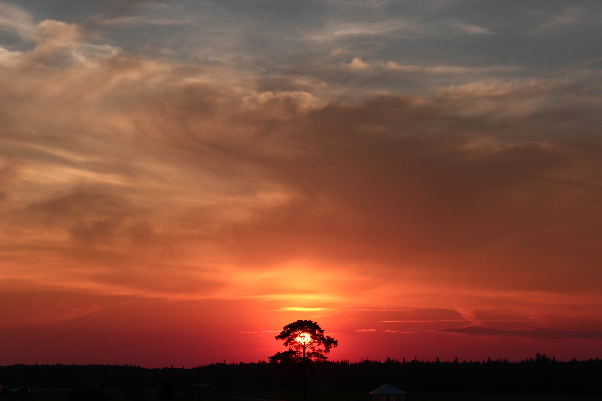
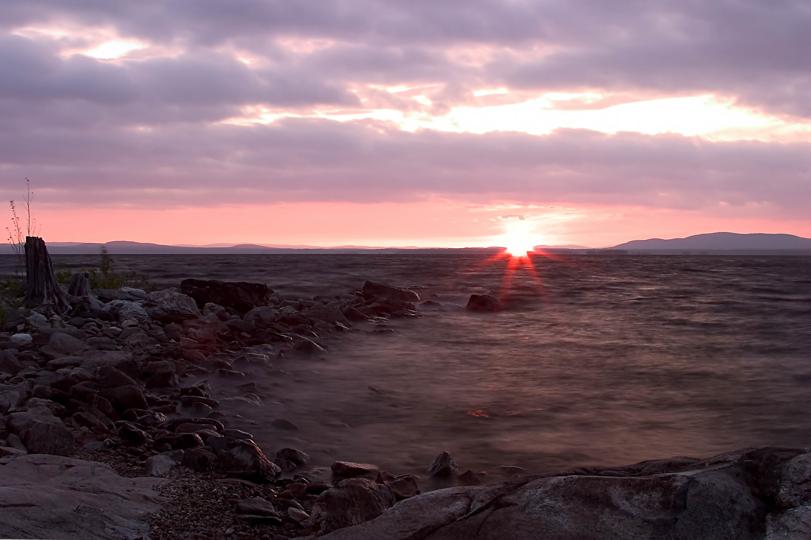

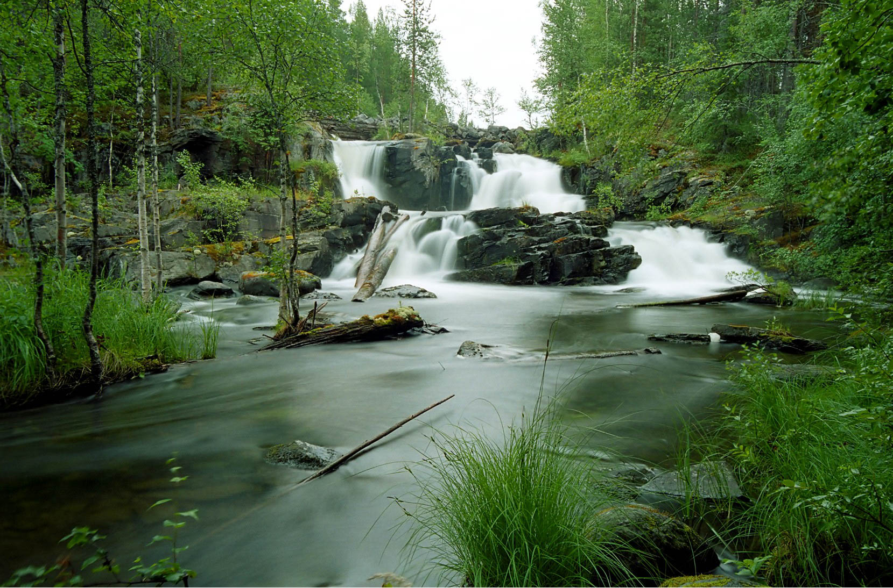
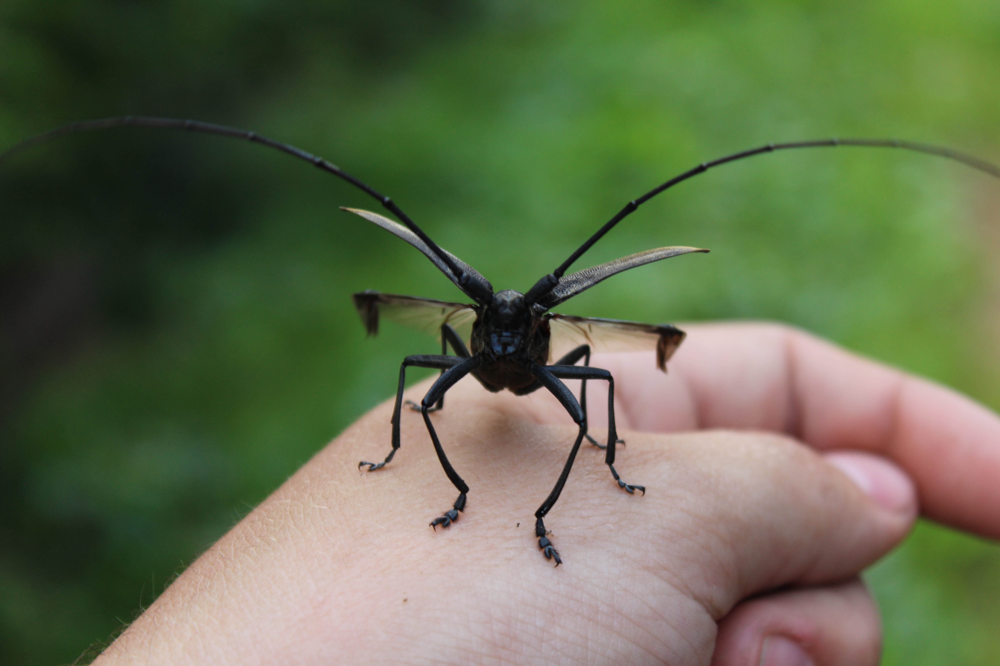
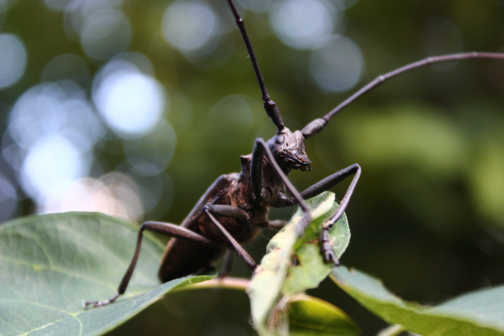
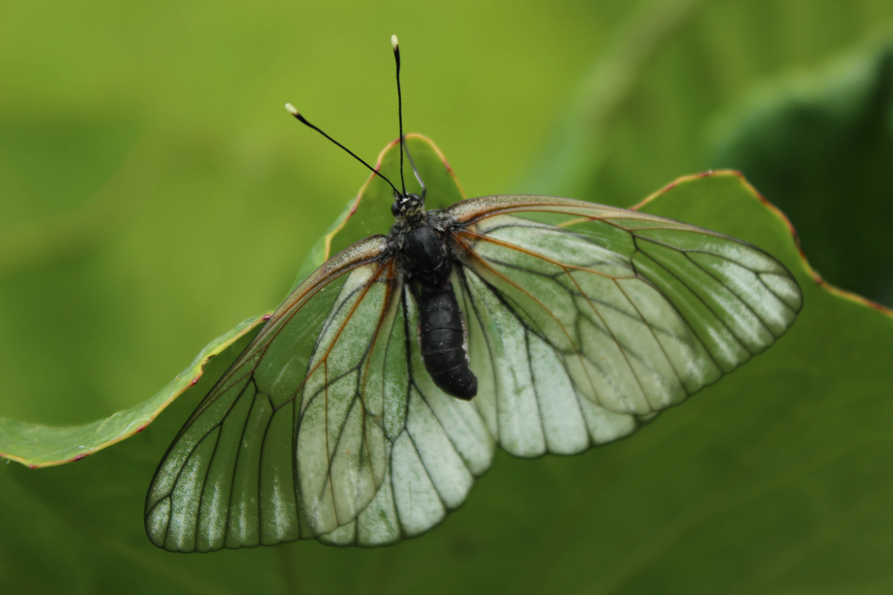
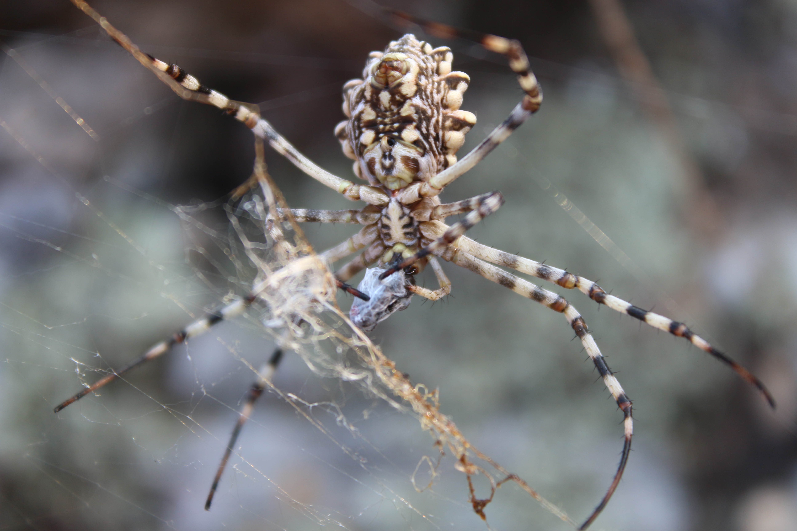
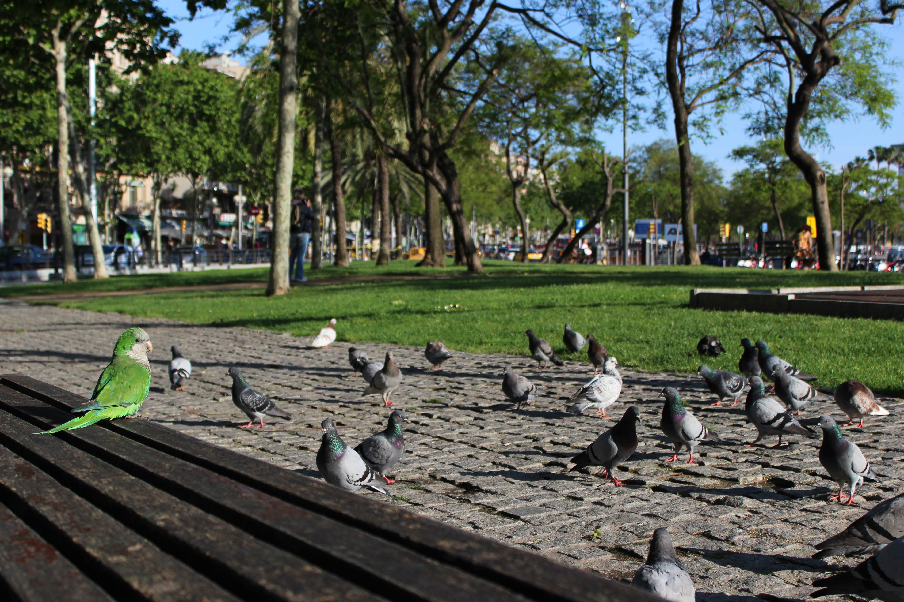
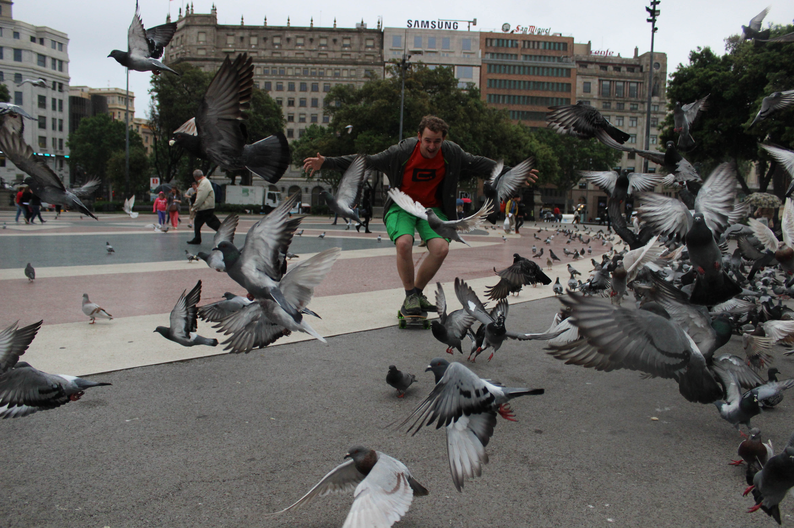
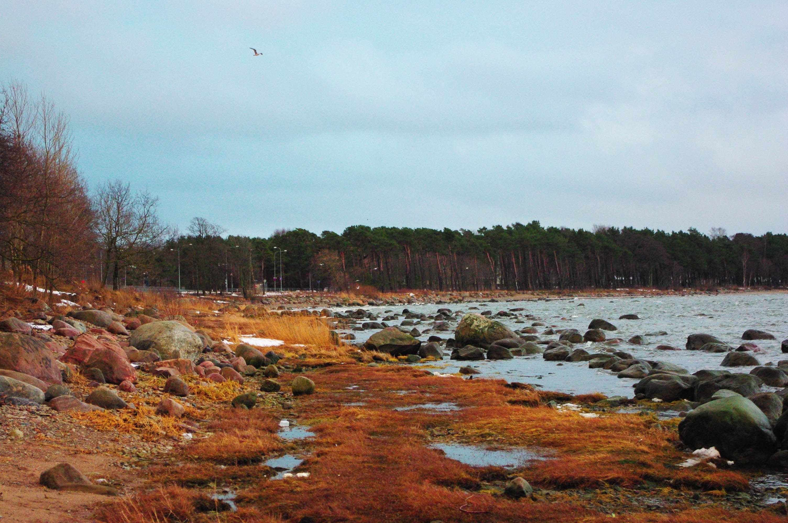
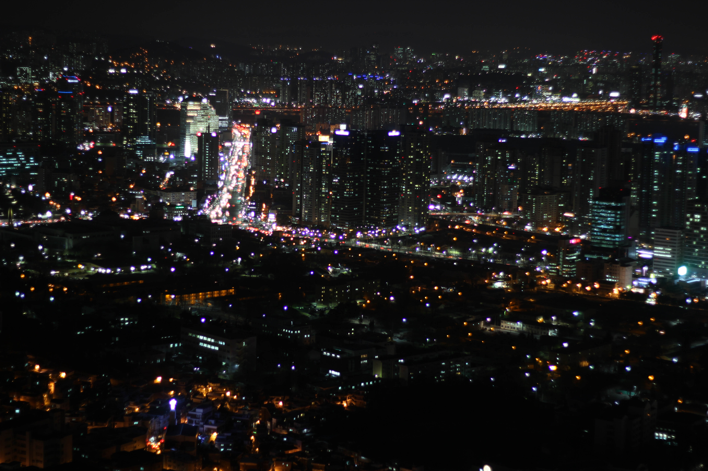